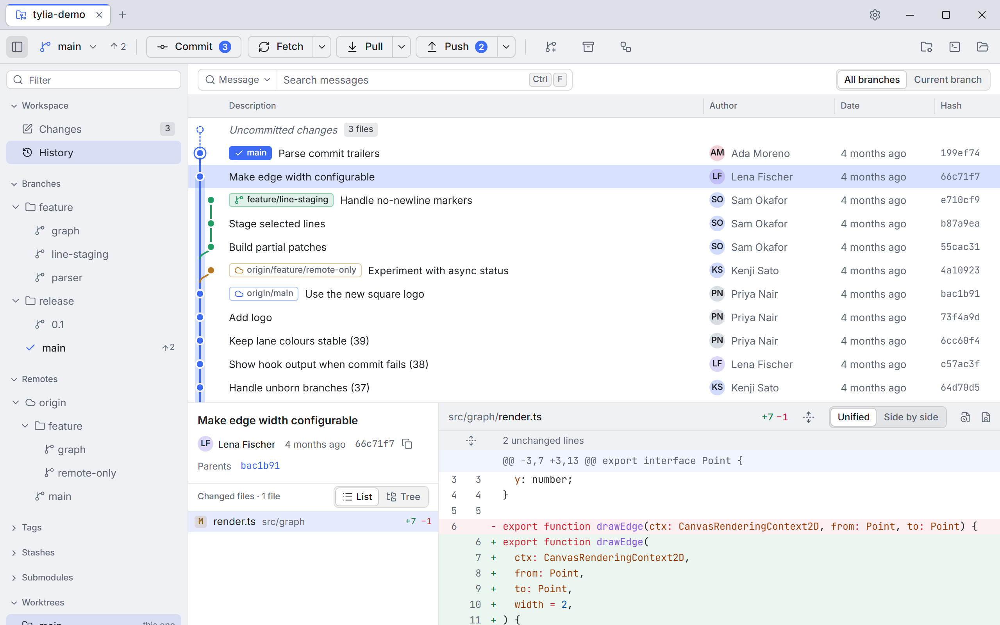
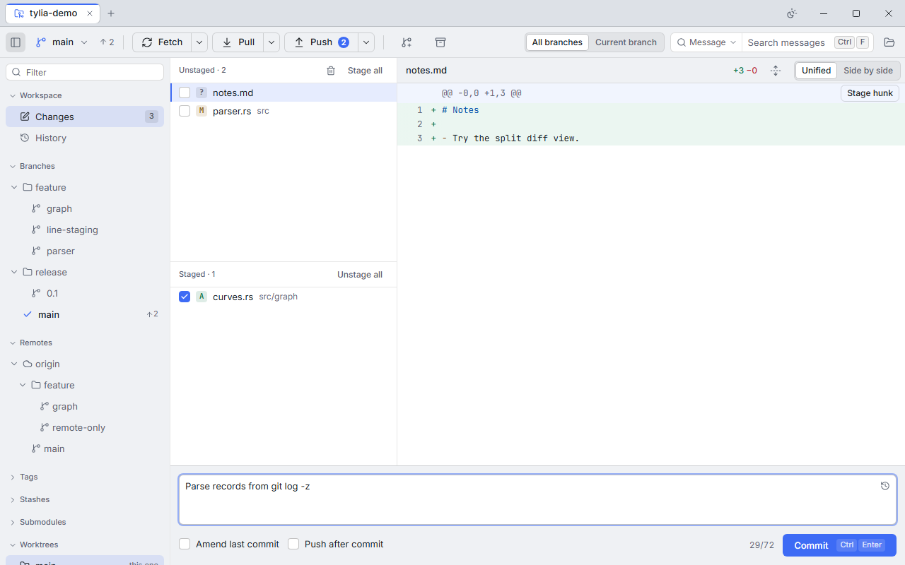

Git, faster and clearer than the command line
Tylia is a desktop Git client for Linux, Windows and macOS. A commit graph you can read at a glance, staging down to a single line, and nothing in your way.
Tylia is pronounced TEE-lee-a, a respelling of Tilia, the linden tree.

Made for everyday Git
Tylia runs the Git you already have, so hooks, credential helpers, commit signing and your config behave exactly as they do in a terminal.
-
A graph you can read
Stable lane colours, clear merges and branch labels. History streams in, so large repositories open quickly.
-
Stage single lines
Stage, unstage or discard a whole file, one hunk, or just the lines you select in the diff.
-
Conflicts, block by block
Pick ours, theirs or both for each conflicting block, then continue, skip or abort the merge or rebase.
-
Interactive rebase
Drag commits to reorder; pick, reword, edit, squash, fixup or drop, with a preview of the result.
-
Keyboard first
Every action is in the command palette (Ctrl/Cmd+K), and every shortcut can be rebound.
-
Fetch, pull and push
With progress and cancel. When Git needs a password, token or SSH passphrase, Tylia asks in a dialog.
-
Blame, history and more
Blame and file history that follow renames. git-flow helpers. Submodules, worktrees and an LFS indicator.
-
Light, dark, accessible
Both themes designed together. Screen-reader labels, a sensible focus order, reduced motion and 200% zoom.
Commit exactly what you mean
Unstaged and staged files side by side, the diff in the middle, and a commit message that follows the 50/72 convention. Amend the last commit, or push right after committing.

Private by default
- No telemetry, no analytics, no account.
- Network access only for Git operations you start, such as fetch, pull, push and clone.
- The update check is opt-in and off by default. So are avatars.
- This website makes no third-party requests and sets no cookies.
Open source
- Licensed under MIT or Apache-2.0, at your option.
- Built with Rust and Tauri, on each platform's own web view.
- Destructive actions always ask first and say what will be lost.
- Issues, ideas and contributions are welcome on GitHub.
Download
Version __VERSION__ for 64-bit systems. Packages for 64-bit systems. Requires Git 2.40 or newer.
Tylia is in pre-alpha and has no release yet. The links below go to the releases page on GitHub, where packages appear once the first version is out.
-
Windows
Your systemWindows 10 and 11, x64
Installer (.exe)- MSI package (.msi) for managed installs
-
macOS
Your systemmacOS 12 or later, Apple silicon and Intel
Disk image (.dmg)- One universal app for both processor types.
-
Linux
Your systemx86-64
AppImage- Debian package (.deb) Debian, Ubuntu
- RPM package (.rpm) Fedora, openSUSE
-
Arch Linux (AUR): tylia-bin
yay -S tylia-bin
Make the AppImage executable first:
chmod +x Tylia_*.AppImage
Builds are not code-signed yet
Until signing certificates are in place, your system will warn you the first time you open Tylia.
- Windows
- SmartScreen may say “Windows protected your PC”. Choose More info, then Run anyway.
- macOS
- The first time, right-click (or Control-click) Tylia in Applications and choose Open. Or try to open it once, then go to System Settings › Privacy & Security and choose Open Anyway.
Requirements
Git 2.40 or newer, installed and on your PATH.
Release notes and older versions are on the releases page. You can also build from source.